Number of rows: 70000
Number of columns: 11
| Column | Type | Missing values | Unique values |
|---|---|---|---|
| age | int64 | 0 | 8076 |
| gender | int64 | 0 | 2 |
| height | int64 | 0 | 109 |
| weight | float64 | 0 | 287 |
| ap_hi | int64 | 0 | 153 |
| ap_lo | int64 | 0 | 157 |
| cholesterol | int64 | 0 | 3 |
| gluc | int64 | 0 | 3 |
| smoke | int64 | 0 | 2 |
| alco | int64 | 0 | 2 |
| active | int64 | 0 | 2 |
 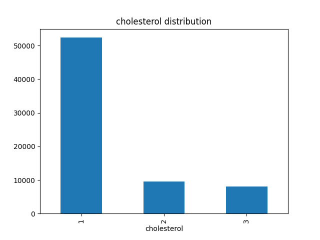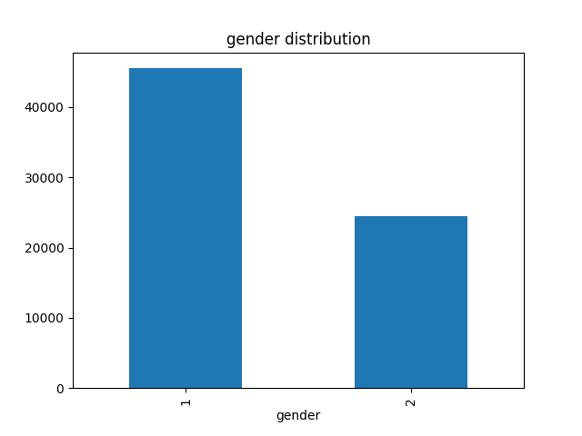
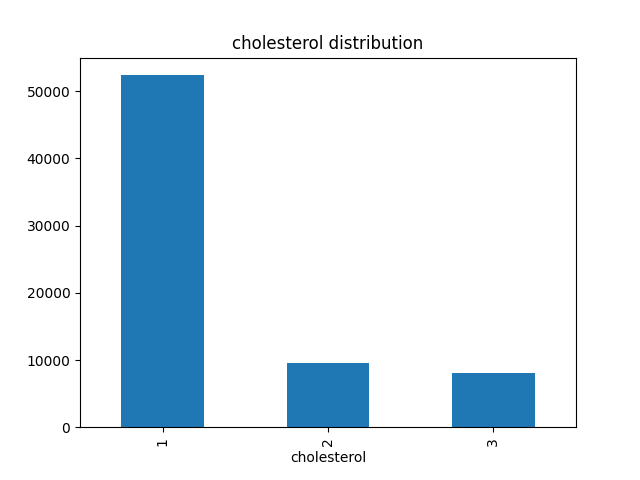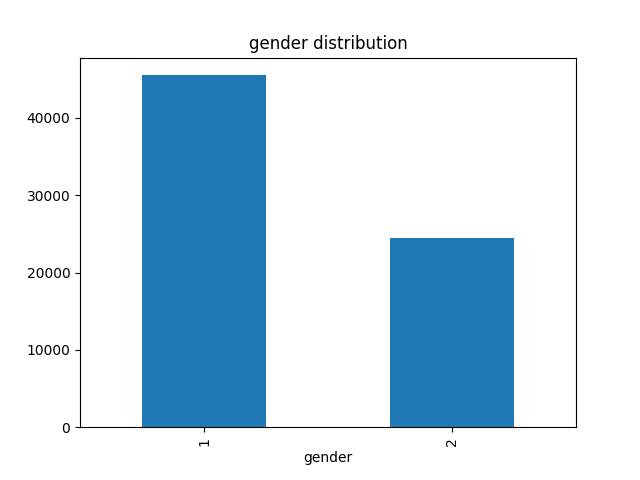 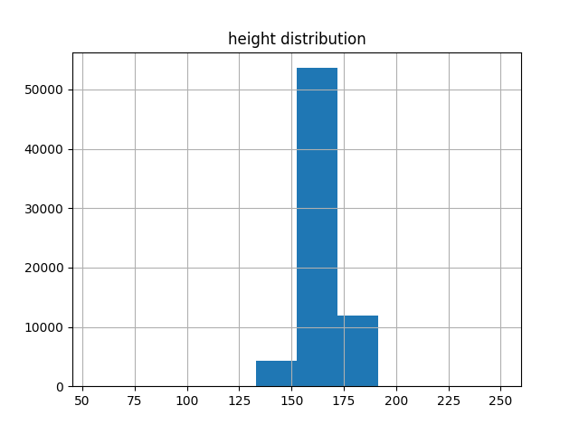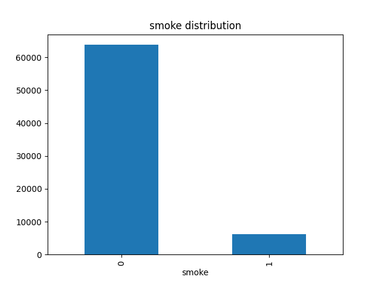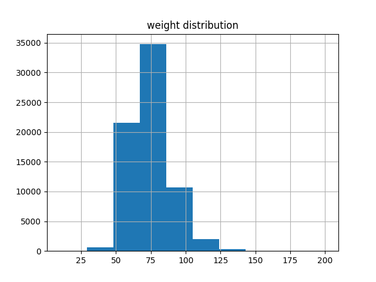
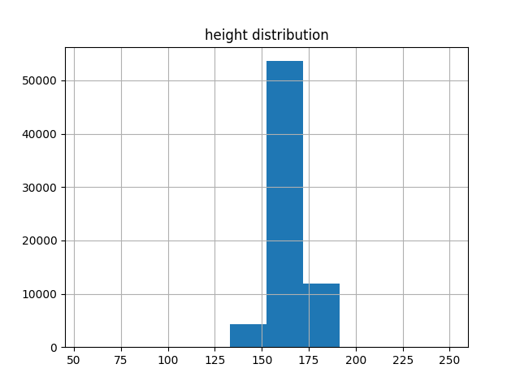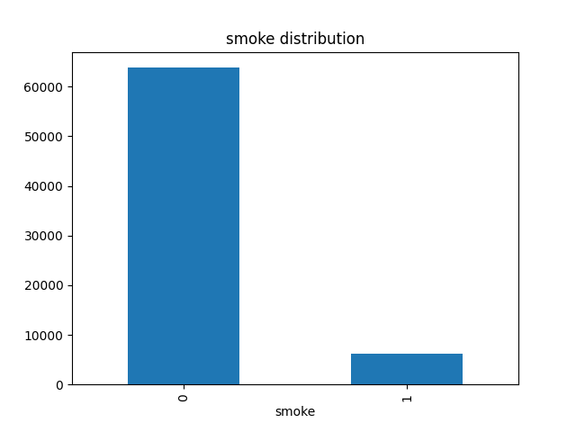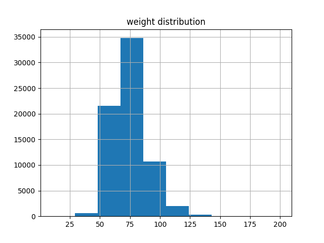
 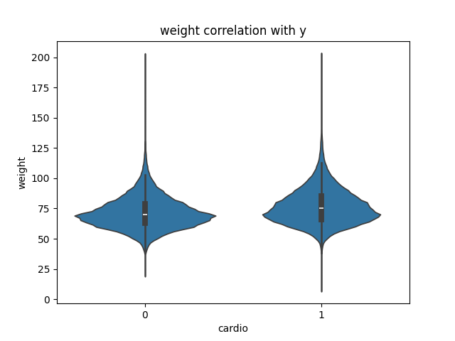
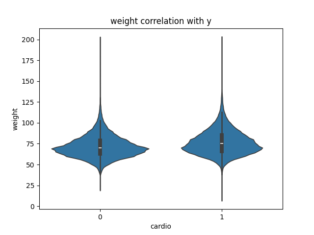| age | gender | height | weight | ap_hi | ap_lo | cholesterol | gluc | smoke | alco | active |
|---|---|---|---|---|---|---|---|---|---|---|
| 18393 | 2 | 168 | 62 | 110 | 80 | 1 | 1 | 0 | 0 | 1 |
| 20228 | 1 | 156 | 85 | 140 | 90 | 3 | 1 | 0 | 0 | 1 |
| 18857 | 1 | 165 | 64 | 130 | 70 | 3 | 1 | 0 | 0 | 0 |
| 17623 | 2 | 169 | 82 | 150 | 100 | 1 | 1 | 0 | 0 | 1 |
| 17474 | 1 | 156 | 56 | 100 | 60 | 1 | 1 | 0 | 0 | 0 |
Target variable: cardio
Binary target variable
Target variable balance: 35021 negative to 34979 positive
Models used: logistic, tree, random_forest, xgboost, lightgbm
Metric used: recall
| Model | Accuracy | Precision | Recall | F1 |
|---|---|---|---|---|
| xgboost | 0.7304571651957857 | 0.7454226357530528 | 0.6994768137513154 | 0.7217191192448772 |
| random_forest | 0.735842864585952 | 0.7611252263658302 | 0.687126318392714 | 0.7221757695943506 |
| logistic | 0.7196429123337597 | 0.7406892957901725 | 0.6754624590106775 | 0.7065672491308699 |
| tree | 0.7210999945801181 | 0.7441507373392663 | 0.673689608133078 | 0.707042259000925 |
| lightgbm | 0.7275428335625994 | 0.7671747914570349 | 0.6529060238605218 | 0.7054429378412004 |